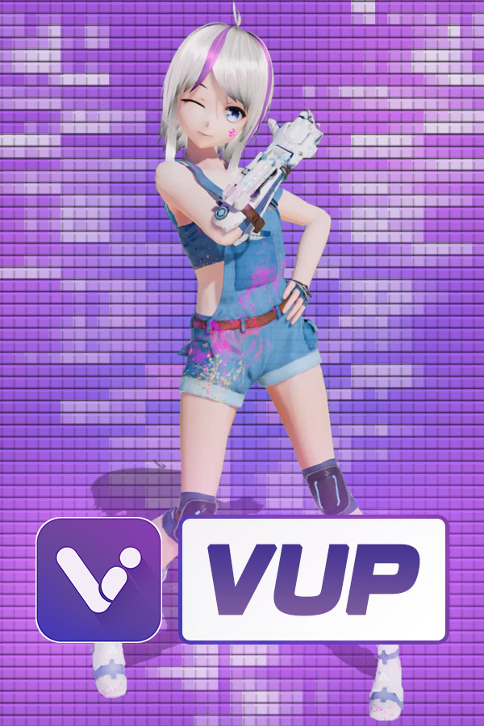

VUP
VUP
Details
|  | |
| Playtime | 7h 46m 0s |
| Last Activity | 2/6/2021 17:27:09 |
| Added | 8/6/2021 23:33:21 |
| Modified | Never |
| Completion Status | Not Played |
| Source | Steam |
| Platform | PC |
| Release Date | 1/2/2020 |
| Community Score | 79 |
| Critic Score | |
| User Score | |
| Genre | Animation & Modeling Video Production |
| Developer | 西安曼云网络科技有限公司 |
| Publisher | 西安曼云网络科技有限公司 |
| Feature | |
| Links | Community Hub Discussions Guides News Store Page PCGamingWiki |
Description

VUP is a VTuber tool, based on real-time capture technology, low-cost, zero-based to realize animation video production and multi-person cross-platform virtual livestream, opening a new era in which everyone is a VTuber.
Welcome to join VUP Discord server
https://discord.gg/DVV6rXyxnyLower CPU usage, the new VUP-Live2D version is coming~
VUP not only supports 3D models, but also Live2D models
What can VUP do?
- Facial Capture
Only an ordinary camera is needed, and the avatar will synchronize your eyes, eyebrows, mouth expressions in real time
You can make the avatar doing these expressions, such as wink, blink your eyes at the same time, move eyeballs, open mouth, raise eyebrows, bulging face, etc. - Motion Capture
VUP provides a variety of motion capture data ports, connect the motion capture device to your computer, then enable VUP motion capture, the avatar will synchronize your limbs and fingers movement in real time.
Supported motion capture such as: Leap Motion (Third Generation), Kinect v2, Noitom PN, Xsens, Intel Realsense (some models), ChingMu optical motion tracking, etc. - Sound Capture
Speaking to the microphone, and the avatar will make the corresponding mouth shape in real time. - Customize models, emojis, animations, props, and scenes
You can customize models(vrm, Live2D, pmx, fbx), emojis, actions (fbx, vmd), props (fbx, pmx), and scenes (Unity3D scene, png, mp4)
Note: pmx , fbx and vmd formats need to be converted to vup format by Unity 2018.4.x before they can be imported into VUP. - Shortcut Key
You can customize and trigger shortcut keys of expressions, actions, cameras, Pose, etc. - Prop
You can customize the props and the prop plans for your avatar. - Virtual Camera
VUP has a built-in virtual camera, you can project your avatar to Zoom, Discord, Skype, Google Meet, Microsoft Teams, etc. - Animation
VUP has a large number of built-in animations, which can be used to record short movies
And you can also import your animation. - Transparent Streaming
No need to filter the background color by the "chroma key"，You can also get an avatar with transparent background
Transparent Streaming is only applicable to OBS, Streamlabs and other live streaming tools that can set "Allow Transparency". - Pose
You can choose a frame of the action in the action library as a pose, or you can customize a new pose. - Camera
You can customize the fixed shots, tracking shots , Pan shots, orbiting shots , linear motion shots , and transition effect of camera. - Auto wink & Auto looking camera
- Screenshot
You can customize the size of the screenshot, the location where the screenshot is stored, and get a screenshot with a transparent background. - Scene parameters can be set
Such as lighting, filters, depth of field, ambient light, sound, etc.
More features, looking forward to your discovery ^_^
Contact us
If you have any problems and suggestions, you can find us in the following ways.VUP Official Email: a@vlivemax.com
VUP Discord server: https://discord.gg/DVV6rXyxny
Twitter: https://twitter.com/vup_v
YouTube: https://www.youtube.com/c/VTuberToolVUP